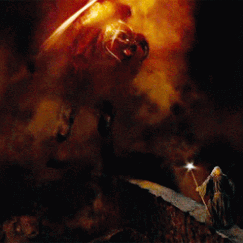

Bridge of Khazad-dûm

You slay many orcs but suddenly they scatter as a deep rumbling echos from deep within the mine.
The Balrog emergizes, and chases you to the Bridge of Khazad-dûm. The exit is
within sight but in order for you and your companions to escape, the wizard sacrifices themselves
to slay The Balrog.